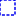
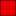

<!doctype html>
<html lang="en">
    <head>
        <meta charset="utf-8">
        <meta http-equiv="X-UA-Compatible" content="IE=edge">
        <meta name="viewport" content="initial-scale=1,user-scalable=no,maximum-scale=1,width=device-width">
        <meta name="mobile-web-app-capable" content="yes">
        <meta name="apple-mobile-web-app-capable" content="yes">
        <link rel="stylesheet" href="css/leaflet.css">
        <link rel="stylesheet" href="css/qgis2web.css"><link rel="stylesheet" href="css/fontawesome-all.min.css">
        <link rel="stylesheet" href="css/leaflet-search.css">
        <style>
        html, body, #map {
            width: 100%;
            height: 100%;
            padding: 0;
            margin: 0;
        }
        </style>
        <title>Covid-19 Status on Kiribati Islands as at 31st March 2022 </title>
    </head>
    <body>
        <div id="map">
        </div>
        <script src="js/qgis2web_expressions.js"></script>
        <script src="js/leaflet.js"></script>
        <script src="js/leaflet.rotatedMarker.js"></script>
        <script src="js/leaflet.pattern.js"></script>
        <script src="js/leaflet-hash.js"></script>
        <script src="js/Autolinker.min.js"></script>
        <script src="js/rbush.min.js"></script>
        <script src="js/labelgun.min.js"></script>
        <script src="js/labels.js"></script>
        <script src="js/proj4.js"></script>
        <script src="js/proj4leaflet.js"></script>
        <script src="js/leaflet-search.js"></script>
        <script src="data/LandBoundary_0.js"></script>
        <script src="data/IslandBoundary_1.js"></script>
        <script>
        var highlightLayer;
        function highlightFeature(e) {
            highlightLayer = e.target;

            if (e.target.feature.geometry.type === 'LineString') {
              highlightLayer.setStyle({
                color: '#ffff7d',
              });
            } else {
              highlightLayer.setStyle({
                fillColor: '#ffff7d',
                fillOpacity: 1
              });
            }
            highlightLayer.openPopup();
        }
        var crs = new L.Proj.CRS('EPSG:3832', '+proj=merc +lon_0=150 +k=1 +x_0=0 +y_0=0 +datum=WGS84 +units=m +no_defs', {
            resolutions: [2800, 1400, 700, 350, 175, 84, 42, 21, 11.2, 5.6, 2.8, 1.4, 0.7, 0.35, 0.14, 0.07],
        });
        var map = L.map('map', {
            crs: crs,
            continuousWorld: false,
            worldCopyJump: false, 
            zoomControl:true, maxZoom:28, minZoom:3
        }).fitBounds([[0.3357813808850625,168.95603078099418],[3.8774426974731107,175.1598560668124]]);
        var hash = new L.Hash(map);
        map.attributionControl.setPrefix('<a href="https://github.com/tomchadwin/qgis2web" target="_blank">qgis2web</a> &middot; <a href="https://leafletjs.com" title="A JS library for interactive maps">Leaflet</a> &middot; <a href="https://qgis.org">QGIS</a>');
        var autolinker = new Autolinker({truncate: {length: 30, location: 'smart'}});
        var bounds_group = new L.featureGroup([]);
        function setBounds() {
        }
        function pop_LandBoundary_0(feature, layer) {
            layer.on({
                mouseout: function(e) {
                    for (i in e.target._eventParents) {
                        e.target._eventParents[i].resetStyle(e.target);
                    }
                    if (typeof layer.closePopup == 'function') {
                        layer.closePopup();
                    } else {
                        layer.eachLayer(function(feature){
                            feature.closePopup()
                        });
                    }
                },
                mouseover: highlightFeature,
            });
            var popupContent = '<table>\
                    <tr>\
                        <td colspan="2">' + (feature.properties['fid'] !== null ? autolinker.link(feature.properties['fid'].toLocaleString()) : '') + '</td>\
                    </tr>\
                    <tr>\
                        <td colspan="2"><strong>ADM0_EN</strong><br />' + (feature.properties['ADM0_EN'] !== null ? autolinker.link(feature.properties['ADM0_EN'].toLocaleString()) : '') + '</td>\
                    </tr>\
                    <tr>\
                        <td colspan="2">' + (feature.properties['ADM0_PCODE'] !== null ? autolinker.link(feature.properties['ADM0_PCODE'].toLocaleString()) : '') + '</td>\
                    </tr>\
                </table>';
            layer.bindPopup(popupContent, {maxHeight: 400});
        }

        function style_LandBoundary_0_0() {
            return {
                pane: 'pane_LandBoundary_0',
                opacity: 1,
                color: 'rgba(11,0,0,1.0)',
                dashArray: '',
                lineCap: 'butt',
                lineJoin: 'miter',
                weight: 1.0, 
                fill: true,
                fillOpacity: 1,
                fillColor: 'rgba(231,0,3,1.0)',
                interactive: true,
            }
        }
        map.createPane('pane_LandBoundary_0');
        map.getPane('pane_LandBoundary_0').style.zIndex = 400;
        map.getPane('pane_LandBoundary_0').style['mix-blend-mode'] = 'normal';
        var layer_LandBoundary_0 = new L.geoJson(json_LandBoundary_0, {
            attribution: '',
            interactive: true,
            dataVar: 'json_LandBoundary_0',
            layerName: 'layer_LandBoundary_0',
            pane: 'pane_LandBoundary_0',
            onEachFeature: pop_LandBoundary_0,
            style: style_LandBoundary_0_0,
        });
        bounds_group.addLayer(layer_LandBoundary_0);
        map.addLayer(layer_LandBoundary_0);
        function pop_IslandBoundary_1(feature, layer) {
            layer.on({
                mouseout: function(e) {
                    for (i in e.target._eventParents) {
                        e.target._eventParents[i].resetStyle(e.target);
                    }
                    if (typeof layer.closePopup == 'function') {
                        layer.closePopup();
                    } else {
                        layer.eachLayer(function(feature){
                            feature.closePopup()
                        });
                    }
                },
                mouseover: highlightFeature,
            });
            var popupContent = '<table>\
                    <tr>\
                        <td colspan="2"><strong>Island Name</strong><br />' + (feature.properties['Island Name'] !== null ? autolinker.link(feature.properties['Island Name'].toLocaleString()) : '') + '</td>\
                    </tr>\
                    <tr>\
                        <td colspan="2"><strong>Covid-19 cases</strong><br />' + (feature.properties['Covid19 cases updated_new_cases'] !== null ? autolinker.link(feature.properties['Covid19 cases updated_new_cases'].toLocaleString()) : '') + '</td>\
                    </tr>\
                </table>';
            layer.bindPopup(popupContent, {maxHeight: 400});
        }

        function style_IslandBoundary_1_0() {
            return {
                pane: 'pane_IslandBoundary_1',
                opacity: 1,
                color: 'rgba(0,0,239,1.0)',
                dashArray: '1,5',
                lineCap: 'square',
                lineJoin: 'bevel',
                weight: 2.0,
                fillOpacity: 0,
                interactive: true,
            }
        }
        map.createPane('pane_IslandBoundary_1');
        map.getPane('pane_IslandBoundary_1').style.zIndex = 401;
        map.getPane('pane_IslandBoundary_1').style['mix-blend-mode'] = 'normal';
        var layer_IslandBoundary_1 = new L.geoJson(json_IslandBoundary_1, {
            attribution: '',
            interactive: true,
            dataVar: 'json_IslandBoundary_1',
            layerName: 'layer_IslandBoundary_1',
            pane: 'pane_IslandBoundary_1',
            onEachFeature: pop_IslandBoundary_1,
            style: style_IslandBoundary_1_0,
        });
        bounds_group.addLayer(layer_IslandBoundary_1);
        map.addLayer(layer_IslandBoundary_1);
            var title = new L.Control();
            title.onAdd = function (map) {
                this._div = L.DomUtil.create('div', 'info');
                this.update();
                return this._div;
            };
            title.update = function () {
                this._div.innerHTML = '<h2>Covid-19 Status on Kiribati Islands as at 31st March 2022 </h2>';
            };
            title.addTo(map);
            var abstract = new L.Control({'position':'topright'});
            abstract.onAdd = function (map) {
                this._div = L.DomUtil.create('div',
                'leaflet-control abstract');
                this._div.id = 'abstract'

                    abstract.show();
                    return this._div;
                };
                abstract.show = function () {
                    this._div.classList.remove("abstract");
                    this._div.classList.add("abstractUncollapsed");
                    this._div.innerHTML = 'Total infected cases: 3,066<br />Total recovery cases: 2,570<br />Total new covid-19 cases: 1<br />Imported: 42<br />Total deaths: 13 (60-80 age group)<br />';
            };
            abstract.addTo(map);
        var baseMaps = {};
        L.control.layers(baseMaps,{' Island Boundary': layer_IslandBoundary_1,' Land Boundary': layer_LandBoundary_0,},{collapsed:false}).addTo(map);
        setBounds();
        var i = 0;
        layer_IslandBoundary_1.eachLayer(function(layer) {
            var context = {
                feature: layer.feature,
                variables: {}
            };
            layer.bindTooltip((layer.feature.properties['Island Name'] !== null?String('<div style="color: #000003; font-size: 10pt; font-family: \'Mongolian Baiti\', sans-serif;">' + layer.feature.properties['Island Name']) + '</div>':''), {permanent: true, offset: [-0, -16], className: 'css_IslandBoundary_1'});
            labels.push(layer);
            totalMarkers += 1;
              layer.added = true;
              addLabel(layer, i);
              i++;
        });
        map.addControl(new L.Control.Search({
            layer: layer_IslandBoundary_1,
            initial: false,
            hideMarkerOnCollapse: true,
            propertyName: 'Island Name'}));
        document.getElementsByClassName('search-button')[0].className +=
         ' fa fa-binoculars';
        resetLabels([layer_IslandBoundary_1]);
        map.on("zoomend", function(){
            resetLabels([layer_IslandBoundary_1]);
        });
        map.on("layeradd", function(){
            resetLabels([layer_IslandBoundary_1]);
        });
        map.on("layerremove", function(){
            resetLabels([layer_IslandBoundary_1]);
        });
        </script>
    </body>
</html>
